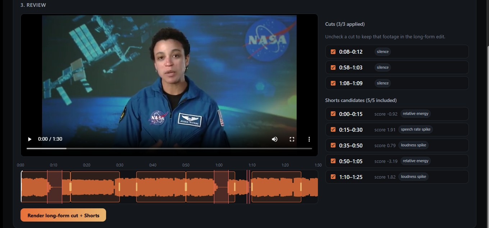

Stop editing your VODs by hand.
Phoenix Editor watches your Let's Play or stream recording, cuts the dead air and filler words, and turns your best moments into captioned, vertically-cropped Shorts automatically.
Reacting to someone else's video? The Reactor template composites your cam over their footage, cuts your own dead air, and ducks their audio under your commentary — no manual timeline work.
Available now for Windows. GPU-accelerated on AMD and NVIDIA.

What it does
Auto-cut long-form VODs
Transcribes your recording, then removes silence, dead air and filler words automatically — a tightened edit without touching a timeline.
Auto-generate Shorts
Scores your VOD for highlight moments, then reframes, crops and burns in captions for vertical Shorts/TikTok/Reels — subject-tracking crop follows the action, not the center of the frame.
Reactor template
Give it your reaction cam and the source video. It composites your cam as a positioned, scaled, optionally mirrored or transparent overlay, cuts dead air from your own commentary, and mutes, ducks or muffles the source audio underneath it.
GPU-accelerated, either vendor
Hardware encode/decode and transcription on AMD (VAAPI/Vulkan) or NVIDIA (NVENC/CUDA) — picked automatically for your machine.
- 1 Drop in your recording (or your reaction cam + source, for Reactor).
- 2 Phoenix detects dead air, filler words and highlight moments.
- 3 Review the detected cuts and Shorts before anything renders.
- 4 Render — GPU-accelerated, on your own machine.
Pricing
Phoenix Editor
$99 first year
- Auto-cut long-form VODs.
- Auto-generate captioned Shorts.
- Reactor template included.
- GPU-accelerated on AMD or NVIDIA.
- Nothing uploads — runs on your machine.
Try it free for 7 days first — every feature unlocked, exports with no watermark, no card needed. After that it keeps working; exports just carry a small mark until you buy.
$99 covers a full year of updates, then renews at $49/year to keep new features coming. Cancel anytime — you keep using the version you have, full quality, no watermark, no expiry. Billed and handled by Lemon Squeezy.
Not a subscription trap
It runs on your own GPU, so you're not paying for our hosting or compute — $99 unlocks everything and includes a year of new detection models and templates (Reactor was the first). If you cancel, Phoenix Editor keeps working exactly as it is: full quality, no watermark, forever. Renewing at $49/year just keeps new features coming.
Same house rules
Detection, transcription and rendering all happen on your own GPU. Your footage isn't uploaded anywhere to use the app.
Download
The download is the full app. The first 7 days are a free trial with every feature unlocked and no watermark, so you can put a real VOD through it before deciding. New to it? Start with the setup and first edit guide.
What it needs
Transcription and rendering both lean on the GPU, so that is what matters most. A long stream is still a long job, and most people set it going and come back to it.
| Minimum | Recommended | |
|---|---|---|
| Graphics card | Any GPU with Vulkan AMD, Intel or NVIDIA |
NVIDIA (CUDA) or AMD 8 GB+ roughly 3-5x faster transcription |
| Memory | 8 GB RAM | 16 GB RAM |
| OS | Windows 10/11 (64-bit) | |
| Storage | A few GB free, plus room for what you export | |
No GPU at all? It still runs on the processor, just slower. Nothing is uploaded either way, so the only limit is your own hardware.
Questions
Is Phoenix Editor available yet?
Yes — Phoenix Editor is available now for Windows. macOS and Linux support are planned.
Can I try Phoenix Editor before buying?
Yes. The first 7 days are a full free trial — every feature unlocked and exports carry no watermark, with no card required. After the trial Phoenix Editor keeps working; exports just carry a small “Made with Phoenix Editor” mark until you buy.
Is this a subscription?
It's a $99 one-time payment that includes a full year of updates. It renews at $49/year after that if you want to keep getting new features — cancel anytime and keep using the version you have, full quality, no watermark, no expiry.
Does my footage get uploaded anywhere?
No. Detection, transcription and rendering all run on your own machine and your own GPU.
What is the Reactor template, exactly?
A composite of your reaction cam over a source video: your cam becomes a positioned, scaled, optionally mirrored or semi-transparent overlay window. Phoenix cuts dead air from your own commentary track and mutes, ducks or muffles the source's audio underneath it. It's built to help make a reaction video a transformative edit rather than a straight re-upload — that's a creative and editorial choice, not a legal guarantee, so you're still responsible for how you use the source material.
Which platforms will it run on?
Windows is available now. macOS and Linux support are planned. GPU acceleration works on both AMD and NVIDIA.